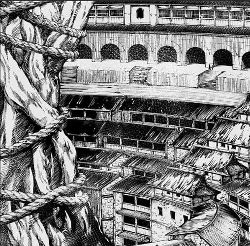
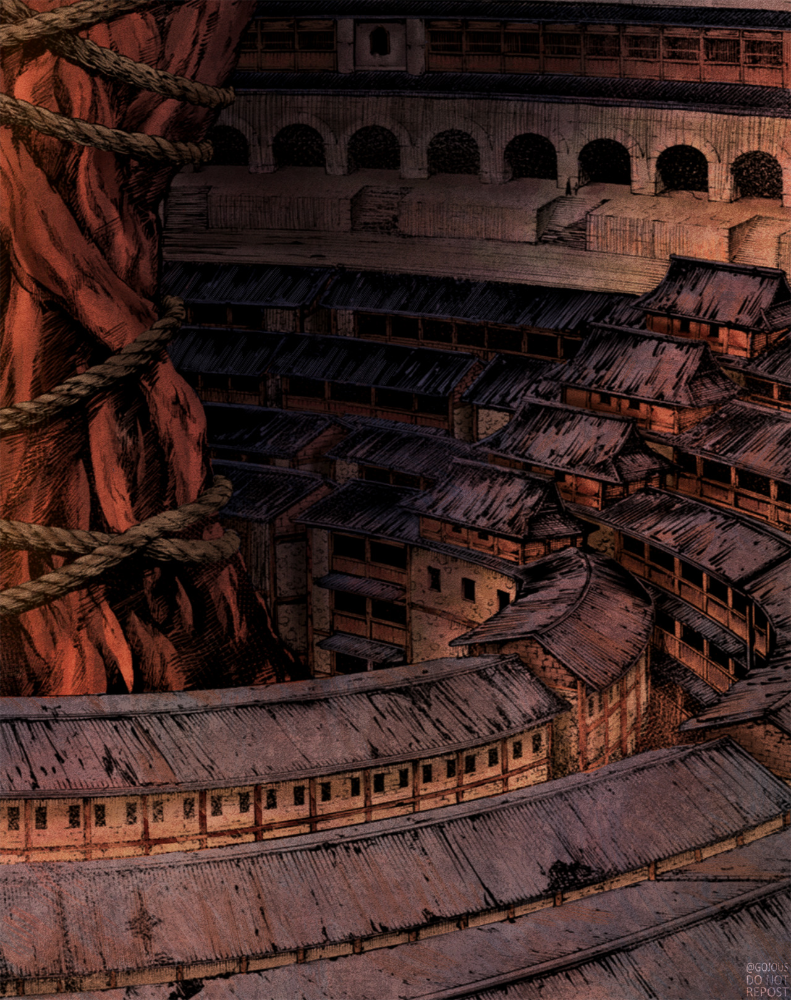

When I was in middle school, I was a huge fan of the Hunger Games and similar dystopian books. I also liked watching the movies, and my mom always said I had to read the book before watching the movie. Back then, I didn't really get it, but looking back, it was fun to get to see what I read come to life on the screen, sometimes exactly as I had imagined, sometimes in a completely different way.
Even after understanding that, I found myself watching anime, but holding off on reading ahead in the manga in between season to keep myself from spoiling it. But after getting more into reading manga, I found that, while it's a bit different than doing the same with normal books, there is still something cool about seeing your favorite manga come to life through animation.
Note: There will be no spoilers for any manga or anime in this article.
While I had figured out that reading the book first didn't ruin the movie or tv show, I kind of figured it would be different with manga because of one thing: the drawings. I figured it would just be seeing exactly how things would be in the anime, just without the movement. But I never realized how important the movement was.
For example, I finished watching season 4 part 1 of Attack on Titan back in early 2021, and was so impatient to see what happened next, that I hopped on Crunchyroll's manga section and started reading. The story was so good, I was excited to see it all be animated in part 2. I kind of figured it would be different, but I never realized by how much! Seeing some of the crazier moments in motion instead of still images made things look so much cooler and gave bigger moments more impact than they already had in the manga.
I also never realized how much details color added to things. Sometimes when looking at black and white images, it's hard get details like shading, lighting, and other stuff that ultimately shifts the feel of a scene.
The best example I can think of is in the (at the time of writing) newest episode of Jututsu Kaisen, Season 2 Episode 4. There were some scenes that felt completely different in the anime completely due to the colors and shading. The scene in question (spoiler free images below) was a lot darker, and with warmer colors, which contrasted the bright white backgrounds of the manga.
First image: A picture from the Jujutsu Kaisen manga.
Second image: The same image from the anime with color.
There is a lot of creativity that goes into the manga. I mean Eichiro Oda has been named a genius of his generation purely because of his work on One Piece, with the storytelling and artwork. Along with that, there is also a lot of work on the side of the animators in taking that incredible work, and figuring out how to translate it into a medium that involves movement and color. These decisions, on both ends, end up creating something beautiful that can be enjoyed in different ways by anyone who reads or watches. This is probably one of the biggest benefits to reading both: you get to see the story portrayed in two different ways.
Manga and anime are great in my opinion! I think the stories they tell tend to be pretty interesting, and the art styles in both are super unique. Each are good on their own, but I think it is a pretty unique experience to read and watch both to see different ways of telling the same story with more or less the same images.